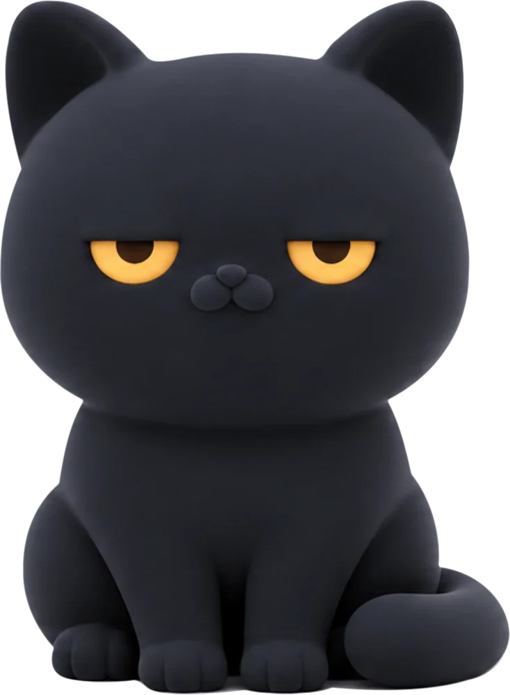
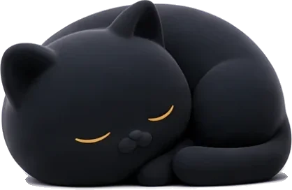
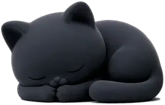
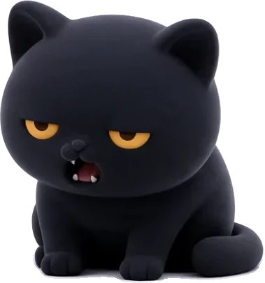
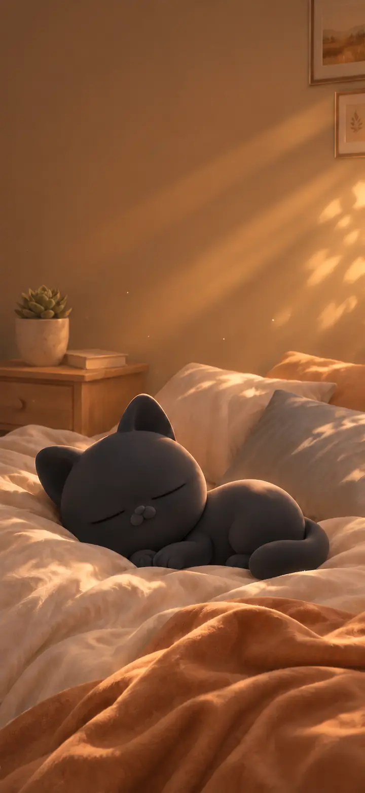

글로도, 목소리로도
말풍선을 누르면 글로, 마이크를 누르면 목소리로 이야기해요.
무심한 듯 곁에 있는 고양이와, 글과 목소리로 나누는 이야기
이 고양이는 AI예요. 진단과 치료는 사람 전문가가 해요.
…뭐야. 나 AI야. 얘기하러 왔어?

처음 만나면 고양이가 묻는 질문이에요. 골라 보세요.
대답할 때마다 고양이가 한 발짝씩 다가와요.

…뭐야. 나 AI야. 얘기하러 왔어?
다 읽었어? …읽었겠지 뭐.
듣는 건 잘해. 고양이니까.
…맞아? 틀렸으면 말해. 고양이도 틀릴 때 있어.

…촌스럽네. 근데 뭐, 싫진 않아.
말풍선을 누르면 글로, 마이크를 누르면 목소리로 이야기해요.
하루가 지나면 AI가 그날의 표정을 골라 달력에 남겨요. 진단이 아니라서 직접 바꿀 수 있어요.
이름은 언제든 바꾸고, 목소리는 여섯 가지 중에서 골라요.
말은 무심해도, 사람을 깎아내리지는 않아요.

그냥 내 말이 맞다고 해 줘.
무슨 일인지도 모르는데 맞다고 해 달라고? 얘기부터 해 봐.
드디어 다 끝냈어!
오. 끝냈네. 고생했다, 진짜.
말투 예시예요.
진단과 치료는 사람 전문가가 해요.
어디에 얼마나 두는지 시작하기 전에 보여 드려요.
답보다 109 안내를 먼저 보여 줘요.
상담 앱은 상담을 받기로 마음먹은 뒤에 쓰는 곳이에요. here는 그 전에, 오늘 있었던 일을 편하게 꺼내 놓는 곳이에요. 사람 상담사와 이어지는 기능은 준비하고 있어요.
말은 무심해도 사람을 깎아내리지는 않아요. 힘든 이야기가 나오면 장난을 멈추고, 불편하다고 하면 바로 그만둬요.
지난 대화는 홈에서 위로 올려 다시 볼 수 있어요. 어디에 얼마나 두는지는 시작하기 전에 화면으로 먼저 알려 드려요. 답변을 만들 때는 대화가 외부 AI 서비스로 전달돼요.
만 14세 이상이면 쓸 수 있어요. 휴대폰 브라우저에서 바로 열리고, 카카오나 구글 계정으로 시작해요.
